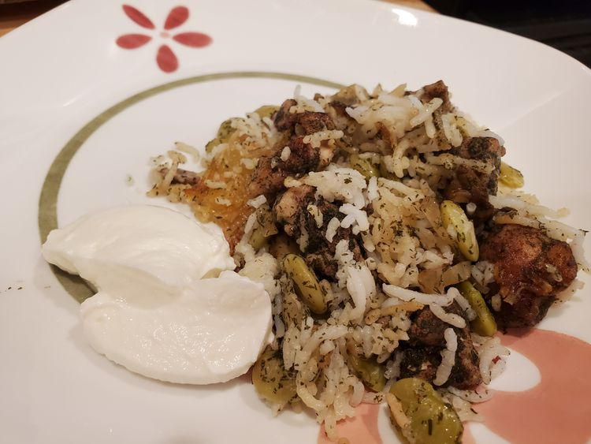

Baghali Polo!

Baghali Polo is a famous Iranian dish that is widely popular in the Caucaus Regions
Description:
Baghali Polow is a Persian Dill Rice made with fava beans, broad beans, or lima beans. It easy to make all year long, and the dried dill packs a ton of flavor. Baghali translates from Farsi to English as fava bean. Polo is the Farsi word for rice.
Ingredients:
- 1 1/2 cups basmati rice
- 1 cup lima beans or fava beans
- 1/2 cup dried dill
- 3 tbsp sea salt
- 5 tbsp flavorless oil canola, sunflower seed, vegtable, etc.
- 1 pinch saffron
Steps:
- Bring about 2/3 a pot water of water to boil. Add 3 tbsp salt.
- In the meantime, wash rice 3 times with cold to lukewarm water until the water runs clear.
- Add the rice and lima beans to the boiling water and gently stir. Bring it back to a boil, then remove the lid to keep from overflowing.
- When al dente, strain. Do not overcook! If salty, rinse with cold water. Shake colander to remove as much water as possible.
- Add 3 tbsp of oil in a pot. Then gently add half of the drained rice and lima beans. Top with the dill, then add the rest of the rice and lima beans.
- Using the back side of a kitchen utensil, make 6 deep holes in the rice, then put the lid back on. Cook on medium heat, watching it carefully.
- When the lid gets foggy, pour a little oil over the rice – about 2 tbsp. Then put the lid back on and turn the heat to the lowest possible setting.
- Cook 20-30 min from when the oil is poured on top.
- If adding saffron, grind the saffron using a mortar and pestle. Then, steep it in 2 tablespoons of hot water while the rice is steaming. When the rice has finished cooking, add the steeped saffron and water to the top of the rice.
- Fluff the entire rice mixture with a fork to mix in the dill and (optional) saffron.
Return To Homepage